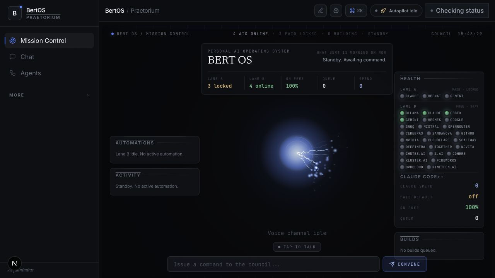

BERT AI
A personal AI workspace that brings conversations, project files, terminals, memory, and voice into one place.

The idea
Useful work gets scattered across AI conversations, project folders, and tools that do not share context.
My approach
Design a central workspace with project context, persistent knowledge, account-based AI conversations, and deliberate handoffs between tools.
What exists
The documented local implementation brings project files, terminals, conversations, and a school planner together. This case study shows an earlier interface; integrations require separate runtime verification.
Next steps
Complete remaining voice and account-integration checks and refine the daily workflow.
Scope & status
Private local workspace. The screenshot shows an earlier interface; public access and every OS-control action are not implied.